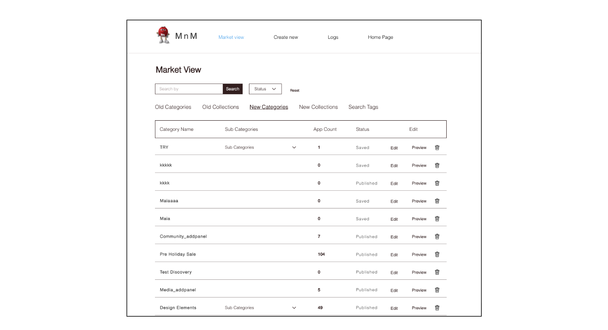
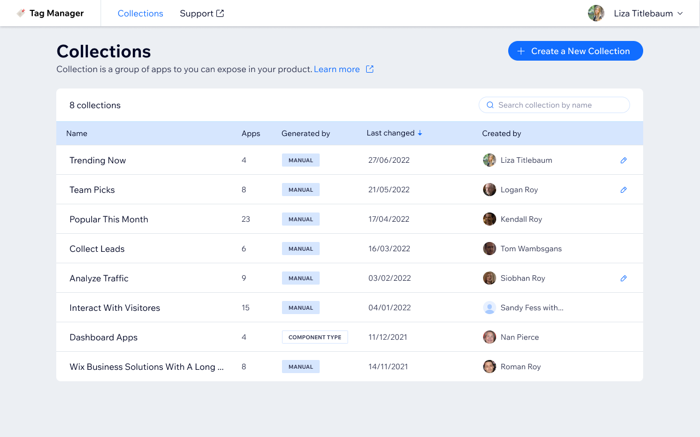
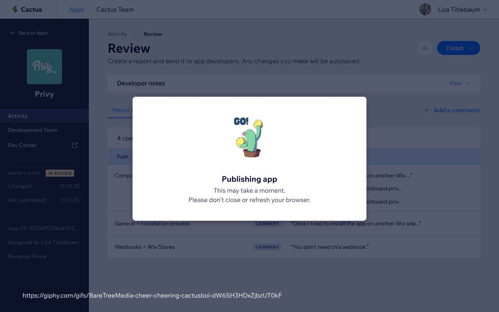
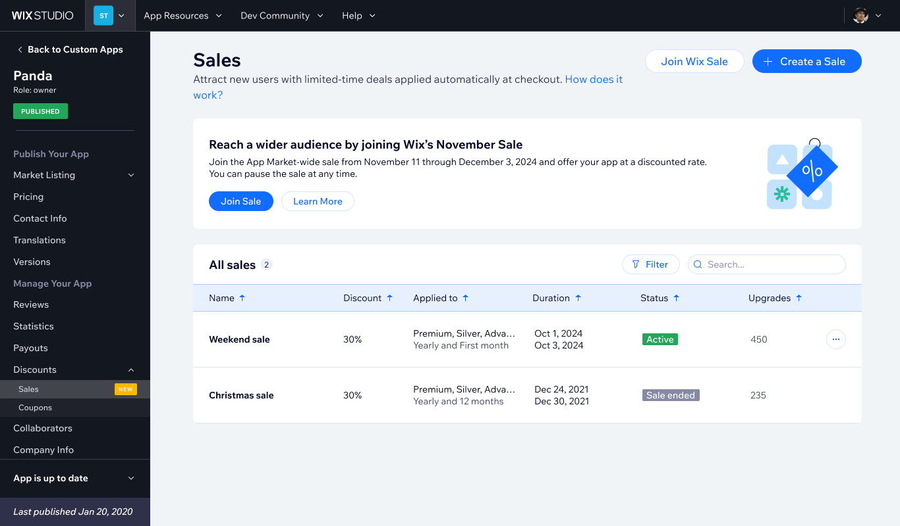

Collections Manager
Internal curation tools for managing App Market collections
App collections power the discovery experience inside Wix Verticals - curated groups of apps that vertical teams embed in their products. The existing tooling was limited, forcing all collection operations through the Wix App Market team.
I redesigned the end-to-end information architecture for an internal collections manager: a list page with search, filter, and reorder; a guided creation flow; and a detail view with tabs for apps, metadata, and contributors. The redesign introduced self-service for vertical teams and role-based access, removing a persistent operational bottleneck.
Before


Wix App Market is a marketplace where third-party developers publish apps for Wix site owners. Before an app goes live, it goes through an internal review process managed by Wix's Developer Relations team.
What I Did
- Redesigned the information architecture for managing app collection and categories
- Designed the collections management page (view, search, filter, reorder)
- Built the collection creation flow (name → generation type → success state)
- Designed the collection detail page with apps, details, and contributors tabs
- Added view-only mode for non-contributors
- Supported both manual and automated (component-type) collection generation modes
Impact
The tool has been in active use by vertical teams across Wix since September 2022, replacing a manual process that required App Market team intervention for every collection operation.









Bottom line
Designing internal tools has a specific kind of satisfaction: you have real users with real complaints, a clear before state, and a concrete problem to solve.
The interesting constraint here was supporting two completely different generation modes, manual and automatic, within the same information architecture without making either feel like a second-class citizen.